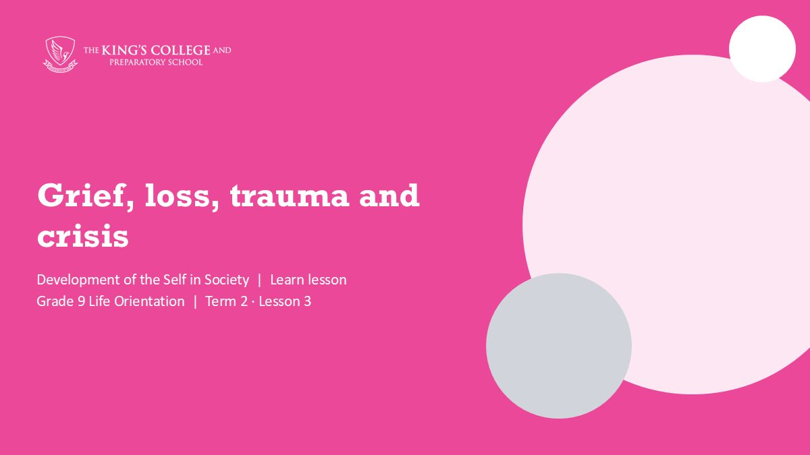

Term 2 · Lesson 3 · Learn lesson
Grief, loss, trauma and crisis
Start here
Today I will
- Distinguish between loss, grief, trauma and crisis
- Describe how grief can feel and how it changes over time
- Know how to support a friend and where to get help
In one minute, list as many kinds of loss as you can, apart from losing a person.
Words to know
- Loss
- When something or someone important is taken away from us.
- Grief
- Our response to a loss: feelings such as sadness, anger, numbness or guilt.
- Trauma
- A strong emotional reaction to a frightening or deeply upsetting event.
- Crisis
- A turning point when our normal ways of coping are not enough and we need support.
- Empathy
- Understanding and sharing what another person feels.
- Support service
- An organisation that helps people in difficult times, e.g. Childline or SADAG.
Slides

Videos
Notes
Loss is part of life. We can lose people we love, but we also lose friendships, homes, pets, our health, a sport, a team or a dream. Grief is the natural response to loss. Sometimes life also brings frightening events (trauma) or turning points where our normal coping is not enough (crisis). This lesson helps you understand these experiences, support a friend, and know that there is hope and help.
Loss and grief
Loss is the event: something or someone important is taken away. Grief is our response to that loss. Grief affects the whole person:
| Area | How grief may show |
|---|---|
| Feelings | Sadness, anger, numbness, guilt, worry, relief, loneliness |
| Body | Tiredness, poor sleep, changes in appetite, headaches |
| Thinking | Trouble concentrating, forgetfulness, going over what happened |
| Behaviour | Crying, pulling away from people, losing interest, being irritable |
| Faith | Questions such as 'Why did God allow this?', or finding comfort in prayer |
There is no 'right' way to grieve and no fixed timetable. Grief often comes in waves: a song, a place or a special day can bring the feelings back months later. That is normal.
Common grief reactions
Many people notice some of these reactions after a loss. They do not happen in a fixed order, and not everyone has all of them:
- Shock or denial: 'This can't be happening.'
- Anger: at the situation, at others, at God or at oneself.
- Bargaining: 'If only I had…'
- Sadness: deep sorrow and missing what was lost.
- Acceptance: learning to live with the loss and finding a new normal.
When grief stays very intense for a long time and stops someone from living their daily life, it is sometimes called complicated grief. Then professional help, such as a counsellor, is needed.
Trauma
Trauma is a strong emotional reaction to a frightening or deeply upsetting event, such as an accident, a crime, abuse or a disaster. It is the reaction to the event, not the event itself. After trauma, people may have nightmares, feel jumpy or on edge, avoid reminders, struggle to concentrate or feel unsafe. Physical injuries can often be seen; emotional injuries cannot, so they are sometimes ignored. With support and, when needed, counselling, people can heal.
Crisis
A crisis is a turning point when our normal ways of coping are not enough. It may follow a loss, trauma, a family breakdown or a serious problem at school. A crisis feels overwhelming, but it is also a moment to reach out for help. Many people say that, looking back, a crisis was when they discovered who truly cared for them and how strong they could be.
| Term | In one sentence | Example |
|---|---|---|
| Loss | The event: something important is taken away. | Moving to a new city and leaving friends behind. |
| Grief | Our response to the loss. | Feeling sad and angry for months after the move. |
| Trauma | A strong emotional reaction to a frightening event. | Nightmares and fear after a car accident. |
| Crisis | A turning point when normal coping is not enough. | A family breaks up and the teen can't cope at school. |
Healthy ways to cope with loss
- Allow yourself to feel; crying is not weakness.
- Talk to people you trust; don't grieve alone.
- Keep a routine: sleep, meals, school and exercise give stability.
- Remember in a healthy way: photos, a journal, a letter.
- Pray, read Scripture or talk to a pastor or youth leader.
- Avoid unhealthy coping such as substances, isolation or risk-taking.
- Ask for professional help if the grief feels too heavy for too long.
Supporting a friend
| Helpful | Not helpful |
|---|---|
| 'I'm so sorry. I'm here for you.' | 'I know exactly how you feel.' |
| Listening without judging | Changing the subject or giving advice too quickly |
| Practical help: notes, lifts, sitting together at break | Avoiding them because you don't know what to say |
| Checking in weeks and months later | 'You should be over it by now.' |
| Telling an adult if they talk about hurting themselves | Keeping it a secret because you promised |
Where to get help
Talk to a parent, teacher, the school counsellor, a pastor or youth leader. Free support services in South Africa include Childline (116), SADAG (0800 567 567) and Lifeline (0861 322 322). If anyone is in immediate danger, call SAPS on 10111.
Many kinds of loss
When people hear 'loss', they often think only of death. But teenagers experience many losses: parents divorcing, moving house or school, a friendship ending, a pet dying, an injury that stops them playing sport, not making a team, a change at school, or a dream that no longer seems possible. Some losses are called 'hidden' losses because other people don't notice them or don't think they matter. All losses can cause real grief, and every grieving person deserves kindness.
Grief at school
- Concentration may be poor for weeks or months; marks may drop for a while.
- A grieving learner may seem fine one day and very sad the next.
- Special days (birthdays, holidays, the start of a new season) can bring feelings back.
- Teachers and the school counsellor can help with extensions, a quiet space or someone to talk to.
- Including the person in normal activities, without pressure, helps them feel they still belong.
Case study: Thabo and the new game
Thabo loved rugby. He had played since primary school, knew his position perfectly and loved Saturday matches with his dad cheering on the side of the field. When King's moved from rugby to basketball, Thabo felt as if part of his identity had been taken away. He lost his sport, the team he belonged to, his weekend routine and his dream of playing for the first team. For a few weeks he was angry, then flat: he skipped practice and told his friends 'What's the point?'
Mia and Aarav didn't lecture him. Aarav asked him to shoot hoops at break 'just for fun', and Mia listened when he said he missed rugby. Coach Ricardo noticed and told Thabo that his strength, fitness and reading of the game would make him a valuable basketball player, and asked him to help with fitness drills. Slowly Thabo began to enjoy the new game. He still misses rugby sometimes, and that is OK: he has found a new normal.
Questions to think about: What did Thabo lose? Which grief reactions did he show? How did his friends and Coach Ricardo help him adapt, and why did their approach work?
Hope in grief
Grief can feel as if it will never end, but most people find that, over time and with support, the pain becomes easier to carry. For Christians, hope rests on God's promise to be close to the broken-hearted (Psalm 34:18) and on the hope we have in Jesus. Hope does not mean pretending to be fine; it means knowing that you are not alone and that sorrow is not the end of the story.
Worked exam answers
Question: Distinguish between loss and grief. (1 x 2) (2)
Answer: Loss is the event when something or someone important is taken away ✓ whereas grief is a person's emotional response to that loss ✓.
Question: Recommend TWO ways a learner can support a friend who is grieving. In each answer, also give the result. (2 x 2) (4)
Answer: Listen without judging or giving quick advice ✓ so the friend feels safe to share their feelings and less alone ✓. Keep including them in normal activities without pressure ✓ so they still feel that they belong and have some stability ✓.
Be able to distinguish between loss and grief, define trauma and crisis, describe how grief can affect a person, and recommend ways to support a grieving friend (with the result). Use the names and details from the source.
Grief has no timetable. Be there, listen, and get help when it's too big to carry alone.
'The Lord is close to the broken-hearted.' How can this bring hope to someone who is grieving, and how can you be 'close' to a friend who is hurting?
In class: Thabo's big change
- Read: Thabo loved rugby: his team, his position, Saturday matches with his dad watching. When King's moved from rugby to basketball, he seemed flat, skipped practice and said 'What's the point?'
- List THREE things Thabo lost when the sport changed.
- Which grief feelings might he be having?
- How can Mia and Aarav support him?
- How could Coach Ricardo help?
Test yourself
- What is the difference between loss and grief?
- What is a crisis?
- Name ONE thing NOT to say to a grieving friend, and what to say instead.
Show answers
1. Loss is the event; grief is our response to it. 2. A turning point when normal coping is not enough and support is needed. 3. e.g. not 'Get over it' or 'I know exactly how you feel'; rather 'I'm sorry. I'm here for you.'
Finished early?
Practise what to say to a friend going through a loss.
- Scenario: Aarav's best friend since Grade 1 is moving to another city, and Aarav is very quiet and sad.
- Write a short, kind message Mia could send him, using what you learnt about helpful words.
- List two practical ways Mia and Thabo could support him over the next few weeks.
- Write one thing they should AVOID saying, and why.